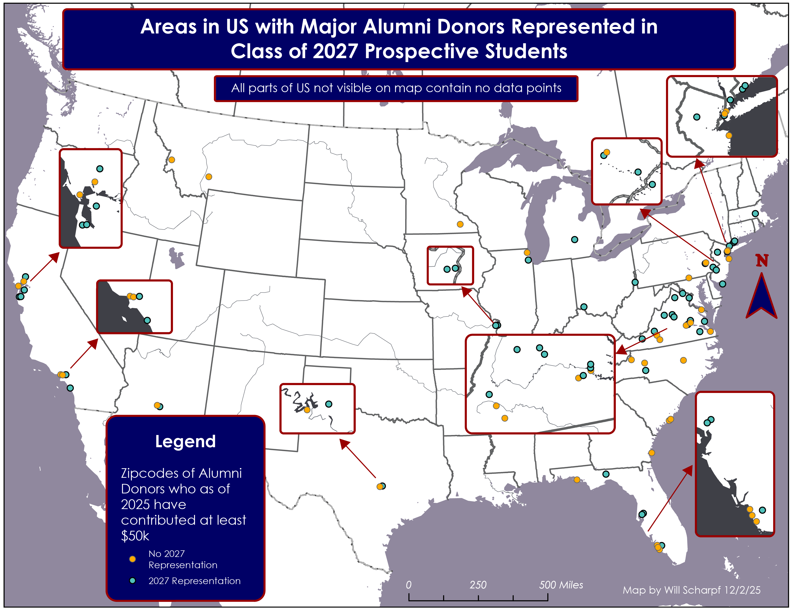
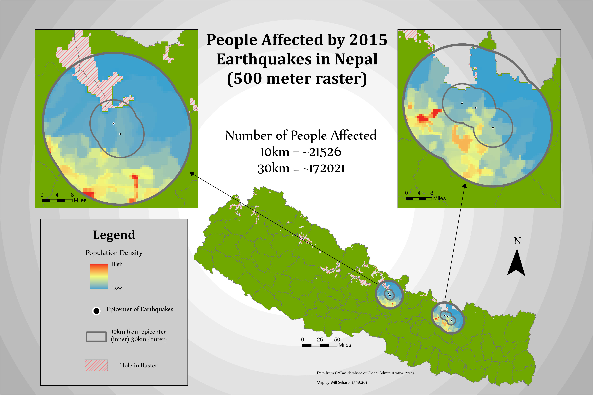
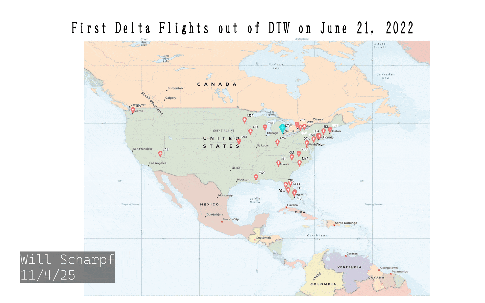
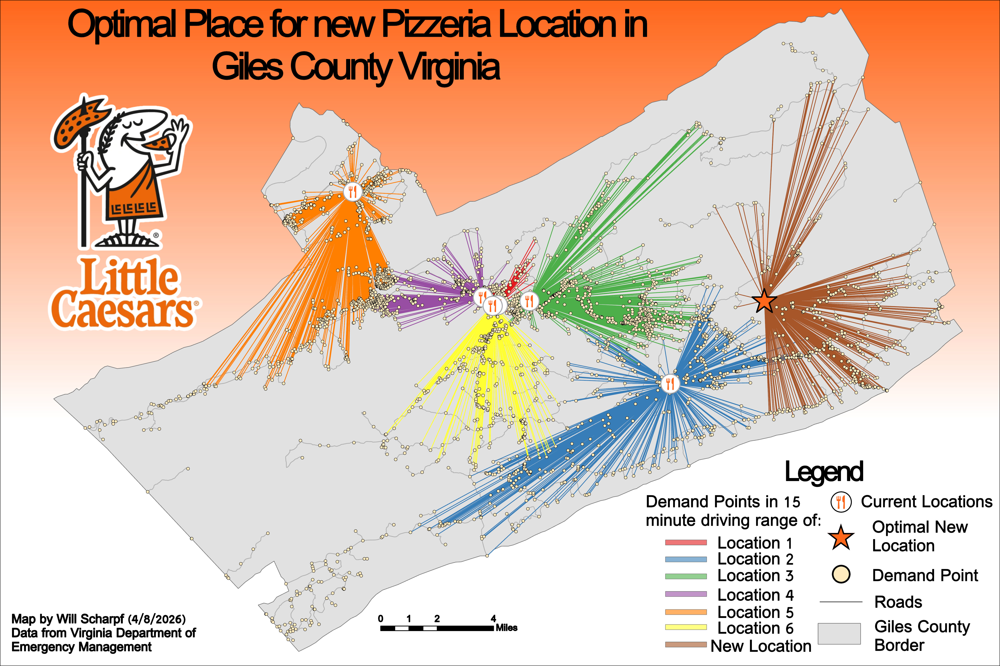
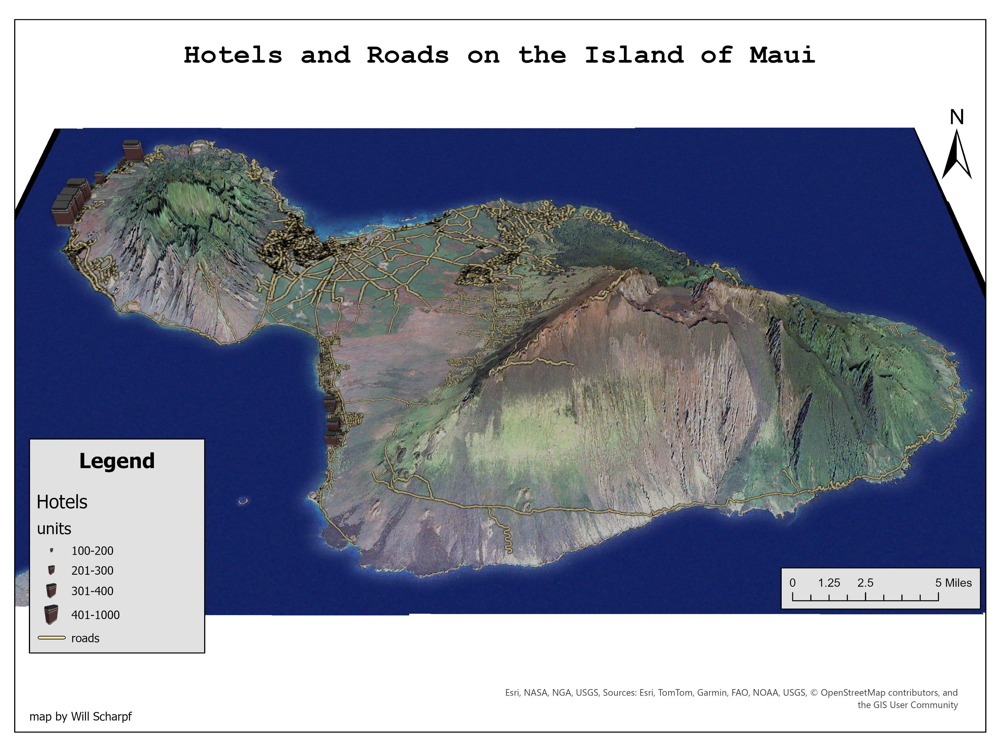
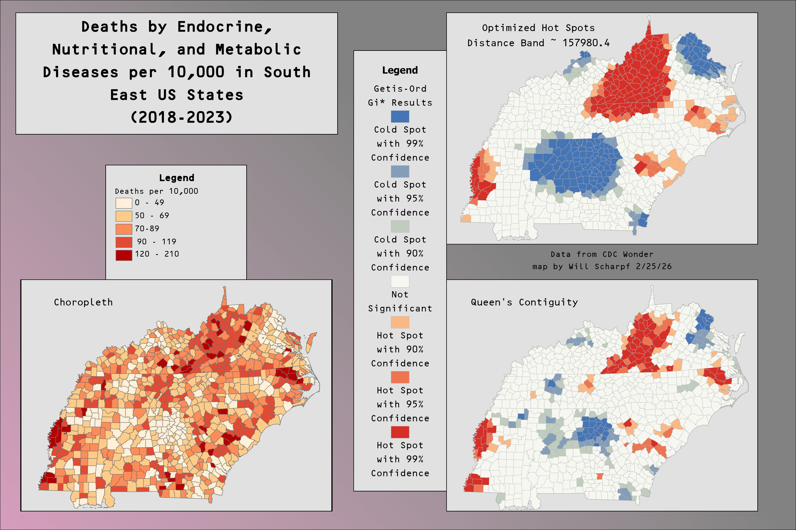
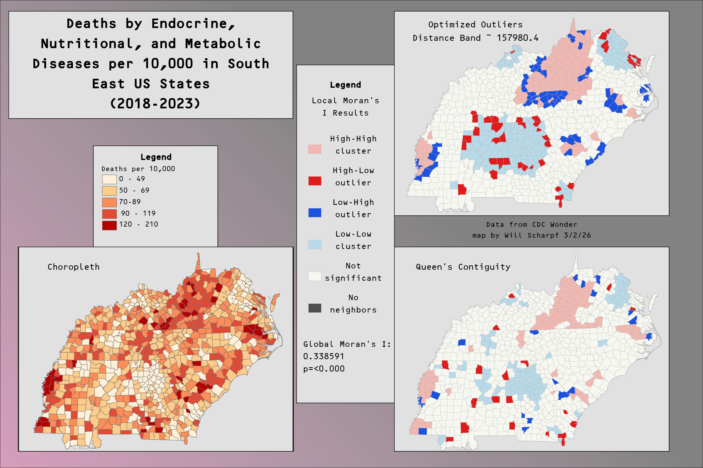

Section · 02
Map Gallery
A collection of maps that I have made.
Alumni Association Map · 2026

This map was created by request of the University of Richmond's Alumni Assocation. The map is created from data provided by The Alumni Assocation. The map represents the zipcode of the current address for every major donor (min, 50k donated). The coloration of the point represents whether or not that zipcode also contains a member from the class of 2027 prospective student list. The purpose of this is to show whether or not the school's marketing is suffiecent at reaching students from areas with a culture of large donations.
2015 Nepal Earthquakes Affected Area· 2026
In April of 2015 five massive magnitude 7 and 8 earthquakes occured in the Gorkha District of Nepal. These earthquakes killed almost 9,000 people and injured over 20,000 more. The following maps show the population density of the areas surrounding the epicenter's of the quakes. They also show the number of people living in these areas. 500m was originaly used since it is a very common raster resolution but due to the size of the area I also made a higher resolution 895m version.

Comparison of Models of Elevation · 2026
The following maps compare different models of representing elevation. They show the elevation of The Univeristy of Richmond's campus.


Animation of Delta Flights Leaving DTW · 2026
The following animated GIF map shows the time and destination of all Delta flights that left the Detriot Metro Airport from 7AM-9AM on 6/21/2022.

Optimal PIzzeria Location · 2026
This map displays the optimal location for a new pizzeria to be opened in Giles County, Virginia, based on the number of demand points within a 15 minute drive of the location. This is done by geocoding the preexisting locations and converting a roads shapefile into a network dataset. Network analysis tools were then used to find the demand points serviced by each facility as well as the optimal location of a new pizzeria.

Labels of Continental US · 2026
This map of the continental US shows off my ability to use Adobe Illustrator to create labels.

3D Map of Maui · 2026
This 3D map shows hotels and roads on the island, where the size of the hotel represents the number of units it holds.

Endocrine, Nutritional, and Metabolic Death Hot Spots · 2026
These maps show deaths by endocrine, nutritional, and metabolic diseases across counties in the southeastern US. The first map uses a Getis-Ord GI* clustering method whilst the second uses Local Moran's I.

